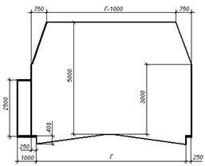
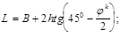
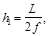
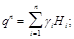
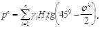
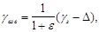
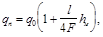

ГОСУДАРСТВЕННЫЙ КОМИТЕТ СОВЕТА МИНИСТРОВ СССР ПО ДЕЛАМ СТРОИТЕЛЬСТВА (ГОССТРОЙ СССР)
СНиП II-44-78
СТРОИТЕЛЬНЫЕ НОРМЫ И ПРАВИЛА
Часть II. нормы проектирования
Глава 44. Тоннели железнодорожные и автодорожные
|
Утверждены |
Глава СНиП II-44-76 «Тоннели железнодорожные и автодорожные» разработана Всесоюзным научно-исследовательским институтом транспортного строительства (ЦНИИС) Минтрансстроя с участием всесоюзного научно-исследовательского института железнодорожного транспорта (ЦНИИ) МПС, Новосибирского филиала Всесоюзного научно-исследовательского института транспортного строительства (СибЦНИИС) и Государственного ордена Трудового Красного Знамени проектно-изыскательского института Метрогипротранс Минтрансстроя.
С введением в действие главы СНиП II-44-78 «Тоннели железнодорожные и автодорожные» утрачивает силу с 1 января 1979 г. глава СНиП II-Д.8-62. «Тоннели железнодорожные и автодорожные. Нормы проектирования».
Редакторы - инж. Я. Д. Демин (Госстрой СССР); кандидаты техн. наук Л. С. Афендиков. В. В. Чеботаев и А. М. Листов, инж. В. Д. Могилевский (ЦНИИС); канд. техн. наук М. П. Красников и инж. В. А. Леонтьев (ЦНИИ); инженеры А. И. Семенов и В. Я. Цодиков (Метрогипротранс); канд. техн. наук В. Е. Славин (СибЦНИИС).
|
Государственный комитет |
Строительные нормы и правила |
СНиП II-44-78 |
|
Тоннели железнодорожные и автодорожные |
Взамен главы |
1.1. Настоящие нормы должны соблюдаться при проектировании новых и реконструкции существующих тоннелей железных дорог колеи 1520 мм и автомобильных дорог I - IV категорий общей сети Союза ССР.
Примечания: 1. Нормы настоящей главы не распространяются на проектирование транспортных тоннелей, сооружаемых открытым способом, подводных тоннелей, сооружаемых методом опускных секций, и горных тоннелей, располагаемых в оползневых массивах.
2. При разработке проектов железнодорожных и автодорожных тоннелей должны выполняться также соответствующие требования, предусмотренные нормативными документами, утвержденными или согласованными Госстроем СССР, а также государственными стандартами и другими законодательными актами.
1.2. Тоннели в течение всего срока их службы должны удовлетворять требованиям бесперебойности и безопасности движения транспортных средств, экономичности и наименьшей трудоемкости содержания тоннелей в процессе их эксплуатации, а также требованиям безопасности работы обслуживающего персонала.
1.3. Основные технические решения, принимаемые в проектах новых или реконструкции существующих тоннельных пересечений: выбор расположения тоннелей в продольном профиле и плане; определение числа путей в железнодорожном тоннеле или полос движения в автодорожном тоннеле для автомобильной дороги I категории; выявление целесообразности сооружения двухпутного или двух однопутных сооружаемых одновременно или последовательно в различные сроки железнодорожных тоннелей при двухпутном тоннельном пересечении; определение количества автодорожных тоннелей, необходимых для размещения требуемого числа полос движения, а также решение вопроса о расположении этих полос в одном или двух ярусах должны обосновываться путем сравнения технико-экономических показателей конкурентных вариантов проектных решений расположения трассы дороги или соответствующего ее участка.
Тоннели на автомобильных дорогах II - IV категорий следует проектировать для двух полос движения.
|
Внесены |
Утверждены |
Срок введения |
1.4. При выборе варианта тоннельного пересечения необходимо учитывать условия эксплуатации рассматриваемой дороги или ее участка, обеспечение потребной пропускной способности, намечаемые способы и сроки производства работ, инженерно-геологические, гидрогеологические, мерзлотно-грунтовые и другие местные особенности, а также опыт возведения тоннелей в аналогичных условиях. При этом, как правило следует избегать заложения тоннелей в местах повышенного водосбора в логах, под седловинами водоразделов и т.д.), в нарушенных или имеющих значительную обводненность грунтах и в пределах зон тектонических нарушений.
При крутопадающих пластах грунтового массива направление трассы тоннельного пересечения следует принимать по возможности близким к направлению вкрест простирания.
1.5. Противопожарные средства следует предусматривать для тоннелей длиной более 300 м. При этом целесообразность соответствующих технических решений необходимо устанавливать по согласованию с ГУПО МВД СССР с учетом вероятности пожара, капитальных затрат и текущих расходов на эксплуатацию средств пожаротушения, а также с учетом местных и климатических условий.
1.6. При проектировании железнодорожных тоннелей, располагаемых в селитебной зоне, следует предусматривать мероприятия по гашению вибраций, создаваемых движением поездов, в тоннельной обделке, верхнем строении и основании пути с таким расчетом, чтобы уровень вибрации в жилых и общественных зданиях, а также в производственных зданиях, где требуется ограничение уровня вибрации по условиям технологии производства, не превышал допустимых значений, установленных санитарными нормами.
2.1. Поперечное сечение новых тоннелей следует проектировать подковообразным или круговым в зависимости от вида и состояния грунтов горного массива, прорезаемого тоннелем, условий работы обделки и с учетом намечаемых способов производства работ.
Поперечное сечение тоннелей, сооружаемых в крепких скальных грунтах, не оказывающих бокового горного давления, допускается принимать с вертикальными стенами.
2.2. Поперечное сечение новых, а также реконструируемых железнодорожных тоннелей должно удовлетворять габариту приближения строений, приведенному в ГОСТ 9238-73* для электрифицированных путей, с учетом конструкции пути и водоотвода.
Габарит приближения конструкций автодорожных тоннелей следует устанавливать в задании на проектирование в зависимости от категории автомобильной дороги и принимать в соответствии с рис. 1 и табл. 1.

Рис. 1. Габарит приближения конструкций автодорожных тоннелей
Таблица 1
|
Категория автомобильной дороги |
Число полос движения в тоннеле |
Расстояние Г между бортовыми камнями, мм |
|
I |
4 |
16000+С |
|
I |
3 |
12000 |
|
I |
2 |
8000 |
|
II |
2 |
8000 |
|
III |
2 |
7000 |
|
IV |
2 |
7000 |
|
Примечания: 1. Расстояния Г между бортовыми камнями автомобильных дорог I категории при двух- и трехполосном движении указаны для каждого направления движения при раздельных тоннелях. 2. Расстояния Г между бортовыми камнями указанное для тоннелей с четырехполосным движением, включает в себя ширину С разделительной полосы между разными направлениями движения, принимаемую не менее 1200 мм. 3. Размеры поперечного сечения тоннелей на кривых участках следует принимать: железнодорожных - по ГОСТ 9238-73* автодорожных - в соответствии с главой СНиП по проектированию автомобильных дорог (в отношении уширения проезжей части и устройства виражей. 4. Тротуар шириной 1000 мм (в том числе защитная полоса шириной 250 мм) предназначен для служебного пешеходного движения, а также для использования в аварийных ситуациях. 5. Внутрь габарита приближения строений (конструкций) тоннелей не должны заходить никакие части сооружений и устройств (оборудование вентиляции, электроснабжения, освещения, сигнализации, блокировки и связи, дренажных, водоотводных и противопожарных устройств и др.), за исключением устройств, предназначенных для непосредственного взаимодействия с подвижным составом. |
||
3.1. Руководящий уклон или уклон кратной тяги, принятый для открытых участков трассы железнодорожной линии, допускается сохранять в тоннеле длиной менее 300 м. При длине тоннеля 300 м и более величина уклона в тоннеле и на подходе к нему со стороны подъема на протяжении, равном принятой на линии длине приемоотправочных путей, не должна превышать величины руководящего уклона (или уклона кратной тяги), умноженной на следующие коэффициенты при длине тоннеля, км:
от 0,3 до 1 - 0,9;
св. 1 до 3 - 0,85;
св. 3 - 0,8 - 0,75 (в зависимости от длины тоннеля).
Продольный профиль пути в тоннеле следует проектировать односкатным или двускатным (в горном тоннеле - с подъемом к его середине) с уклонами не менее 3 0/00 и в исключительных случаях не менее 2 0/00; горизонтальные участки длиной от 200 до 400 м допускается предусматривать в двускатных тоннелях лишь как разделительные площадки между двумя уклонами, направленными в разные стороны.
3.2. Продольный профиль проезжей части автодорожных тоннелей длиной до 300 м следует проектировать односкатным, а длиной более 300 м - односкатным или двускатным (в горном тоннеле - с подъемом к его середине) с уклонами не менее 3 0/00 и не более 40 0/00. При длине тоннелей, до 500 м, располагаемых в трудных топографических и инженерно-геологических условиях, допускается увеличивать продольный уклон до 60 0/00.
3.3. Расположение железнодорожных тоннелей в плане должно удовлетворять требованиям, предъявляемым к открытым участкам железнодорожной линии главой СНиП по проектированию железных дорог колеи 1520 мм.
Радиус кривых в плане для автодорожных тоннелей должен быть не менее 250 м и в исключительных случаях при технико-экономическом обосновании - не менее 150 м.
Предпочтение следует отдавать расположению железнодорожных и автодорожных тоннелей на прямых участках дорог.
4.1. Конструкцию тоннельной обделки (предназначенной для ограждения выработки от деформаций и обрушений грунтового, массива, а также неорганизованного проникания грунтовых вод) следует назначать с учетом инженерно-геологических, гидрогеологических, мерзлотно-грунтовых, климатических и сейсмических условий, нагрузок, действующих на обделку, и способов производства работ.
4.2. Обделка по своему внутреннему очертанию и конструкции должна быть однотипной по всей длине тоннеля. Применение обделок различных типов в одном тоннеле допускается при изменении инженерно-геологических и гидрогеологических условий по длине тоннеля и изменении способа производства работ.
Разность толщин монолитной обделки на смежных участках при необходимости изменения ее несущей способности должна быть не менее 100 мм.
4.3. Несущую обделку следует проектировать криволинейного очертания с обратным сводом в неустойчивых (песчаных, глинистых и нарушенных скальных) грунтах при возможности бокового давления или пучения грунтов; с криволинейными или прямолинейными (при отсутствии бокового давления и пучения грунтов) стенами без обратного свода - в устойчивых (крепких скальных) грунтах. При расположении тоннеля в крепких, но выветривающихся грунтах допускается применять облицовочную обделку.
4.4. Материалы, предусматриваемые для сооружения тоннельных обделок, порталов, а также внутренних конструкций и устройств (перекрытий проезжей части в автодорожных тоннелях, вентиляционных отсеков, камер, ниш и др.), должны отвечать требованиям долговечности, прочности, морозостойкости (при необходимости), стойкости против агрессивных воздействий внешней и внутренней среды, быть несгораемыми и не выделять токсичных соединений в условиях строительства и эксплуатации при нормальных и аварийных температурных режимах.
Тоннельные обделки следует проектировать из сборного железобетона, монолитного бетона, и железобетона, а при сооружении тоннелей в особо сложных инженерно-геологических условиях1 - из чугунных тюбингов.
1 Под «сложными инженерно-геологическими условиями» здесь и далее следует считать условия, при которых имеются одни или несколько следующих факторов: пассивный отпор отсутствует; гидростатическое давление более 1,5 кгс/см2 и искусственное понижение уровня грунтовых вод не может быть осуществлено; горное давление высокое; грунты имеют значительную обводненность; наличие зон тектонических нарушений и т.д.
Порталы следует проектировать из монолитного бетона, бутобетона и железобетона.
В качестве материала для облицовочной обделки тоннелей допускается применять набрызг-бетон, укладываемый по металлической сетке в сочетании с анкерной крепью.
Применение других материалов для обделок и порталов допускается только при соответствующем технико-экономическом обосновании.
4.6. Значения проектной марки бетона по прочности на сжатие следует принимать не ниже:
для сборных железобетонных конструкций тоннельных обделок - М 400;
для монолитных бетонных и железобетонных конструкций тоннельных обделок - М 200 - М 400;
то же, порталов - М 300 - М 400;
для облицовочного покрытия из набрызг-бетона - М 300 - М 500.
Примечание. При применении набрызг-бетона для сооружения тоннельной обделки марку бетона по прочности на сжатие следует устанавливать в пределах М 300 – М 500.
4.6. Плотность и проектные марки бетона по морозостойкости и водонепроницаемости следует назначать с учётом принятой системы гидроизоляции или защиты тоннельной обделки от коррозии в зависимости от климатических и гидрогеологических условий района расположения тоннеля и в соответствии с классификацией бетонов и требованиями к их применению, установленными для I класса сооружений главой СНиП по проектированию бетонных и железобетонных конструкций, а также в соответствии с главой СНиП по защите строительных конструкций от коррозии.
4.7. Толщину элементов обделок и порталов следует устанавливать расчетом, но принимать не менее величин, указанных в табл. 2.
Таблица 2
|
Элементы порталов и обделок |
Минимальная толщина, мм |
|
Своды и стены тоннельной обделки: |
|
|
монолитной бетонной |
200 |
|
монолитной железобетонной |
150 |
|
Блоки сплошного сечения сборной железобетонной обделки |
150 |
|
Ребра или плиты блоков сборной железобетонной обделки |
100 |
|
Стены порталов монолитные: |
|
|
бетонные |
300 |
|
бутобетонные |
500 |
|
железобетонные |
150 |
4.8. Толщину защитного слоя бетона для рабочей арматуры монолитной железобетонной тоннельной обделки следует принимать не менее, мм, при толщине элементов обделки:
100 - 300 мм - 20;
св. 300 до 500 мм - 30;
св. 500 мм - 40.
Толщину защитного слоя бетона для сборной железобетонной обделки толщиной свыше 300 мм допускается уменьшать на 5 мм против приведенных значений.
4.9. При проектировании тоннелей и назначении толщины защитного слоя бетона для рабочей арматуры тоннельной обделки следует предусматривать в соответствии с главой СНиП по защите строительных конструкций от коррозии технические решения по защите тоннельных обделок от коррозии с учетом толщины элементов обделки и степени агрессивности окружающей среды.
В проектах тоннелей, сооружаемых на электрифицированных участках железных дорог, необходимо предусматривать мероприятия по предохранению обделки, а также рельсов и скреплений от вредного воздействия блуждающих токов.
4.10. Элементы сборных обделок должны иметь по периметру устройства для герметизации швов между ними, а также отверстия для тампонажа пустот, остающихся за обделкой в процессе ее монтажа.
4.11. Пустоты за внешним очертанием тоннельной обделки (между обделкой и грунтом) следует заполнять способом нагнетания цементно-песчаных или других растворов, применяя в необходимых случаях пластифицирующие добавки или ускорители схватывания. Состав растворов следует назначать в зависимости от размеров пустот, степени обводненности грунтового массива и агрессивности грунтовых вод.
4.12. При проектировании конструкций тоннелей, сооружаемых в районах с расчетной сейсмичностью 7 баллов и более, необходимо соблюдать требования главы СНиП по строительству в сейсмических районах.
4.13. В железобетонных и бетонных обделках тоннелей, сооружаемых в сейсмических районах, следует предусматривать устройство деформационных швов, расстояния между которыми должны быть не менее, м, для обделок:
из монолитного бетона - 20;
из монолитного железобетона - 40,
из сборного железобетона с омоноличенными соединениями колец - 60.
При пересечении тоннелем тектонических трещин или контакта между породами различной крепости следует предусматривать устройство дополнительных деформационных швов, отсекающих приконтактный участок тоннеля. Конструкция деформационных швов должна обеспечивать водонепроницаемость обделки.
4.14. Железнодорожные тоннели должны иметь камеры и ниши, автодорожные тоннели - камеры.
Камеры следует располагать в шахматном порядке в обеих стенах тоннеля через 300 м (считая по каждой стороне тоннеля).
При длине тоннеля 300 - 400 м необходимо предусматривать одну камеру в середине тоннеля.
Ниши в железнодорожных тоннелях следует располагать в шахматном порядке между камерами через 60 м с каждой стороны. Верх пола ниш и камер в железнодорожных тоннелях должен быть на одном уровне с подошвой рельса, верх пола камер в автодорожных тоннелях - на одном уровне с верхом покрытия проезжей части.
Размеры камер и ниш следует принимать не менее указанных в табл. 3.
Таблица 3
|
Устройства |
Размеры, мм |
||
|
ширина |
высота (по середине камеры, ниши) |
глубина |
|
|
Камеры в тоннелях: |
|||
|
железнодорожных |
4000 |
2800 |
2500 |
|
автодорожных |
2000 |
2600 |
2000 |
|
Ниши в железнодорожных тоннелях |
2000 |
2000 |
1000 |
4.15. Для улучшения видимости мест укрытия людей следует предусматривать окраску наружных углов ниш и камер тоннелей устойчивой флуоресцирующей краской светлого цвета на высоту 500 мм от уровня головки рельса (в железнодорожных тоннелях) или проезжей части (в автодорожных тоннелях).
4.16. Для прохода обслуживающего персонала между параллельными однопутными тоннелями протяжением более 1 км необходимо предусматривать сооружение соединительных выработок (сбоек), располагаемых через 500 - 700 м.
4.17. Конструкции элементов тоннельной обделки должны обеспечивать возможность закрепления кронштейнов для подвески эксплуатационного оборудования (кабелей, аппаратуры освещения, сигнализации и связи, проводов контактной сети и т.д.).
4.18. Для сборных тоннельных обделок замкнутого очертания следует применять преимущественно лотковые элементы, имеющие плоскую внутреннюю поверхность, или предусматривать другие конструктивные решения, максимально сокращающие применение ручного труда.
4.19. Входы в тоннель должны быть укреплены и оформлены в виде порталов.
Выступающую из лобового откоса часть тоннеля следует, как правило, покрывать плотной засыпкой толщиной не менее 1,5 м, защищенной от размыва покрытием.
Парапет портала, поддерживающий засыпку должен обеспечивать задержание скатывающихся с откоса камней и возвышаться над поверхностью засыпки не менее чем на 0,5 м. Вдоль парапета надлежит устраивать водоотводный лоток.
Фундаменты портальных стен следует закладывать на глубину, определяемую расчетом с учетом несущей способности и глубины промерзания грунта в данной местности.
Перед входом в тоннель необходимо предусматривать предпортальные площадки размером не менее 4´2,5 м.
При расположении портала тоннеля в пределах заливаемой поймы дно водоотводного лотка у портала следует располагать не менее чем на 1 м (с учетом подпора и высоты волны) выше наивысшего уровня высоких вод, определяемого по наибольшему расходу с вероятностью превышения 1:300 (0,33 %).
ВОДООТВОДНЫЕ УСТРОЙСТВА И ГИДРОИЗОЛЯЦИЯ
4.20. Тоннели должны быть защищены от проникания в них поверхностных и подземных вод путем: водоотвода; уплотнения окружающего тоннель грунтового массива цементацией, глинизацией, силикатизацией или другими методами; создания водоупорного тампонажного слоя за обделкой посредством нагнетания цементных и других растворов со специальными добавками или без них; устройства наружной или внутренней гибкой гидроизоляции обделки.
Тип и конструкцию водоотводных устройств и гидроизоляции следует назначать на основании результатов сопоставления технико-экономических показателей вариантов проектных решений с учетом материала и конструкции обделки, инженерно-геологических, мерзлотно-грунтовых, гидрогеологических и климатических условий заложения тоннеля, величины притока, напора и степени агрессивности грунтовых вод.
примечание. При расположении тоннелей в грунтовом массиве, подверженном суффозии, дренирование подземных вод не допускается.
4.21. Отвод поверхностных вод следует предусматривать путем устройства нагорных канав и лотков, водонепроницаемой облицовки ложа водотоков, расположенных над тоннелем, планировки поверхности надтоннельной зоны в припортальной части с засыпкой ям, шурфов, скважин и др. недренирующим грунтом, а в необходимых случаях - путем отвода водотоков по лоткам или трубам за пределы надтоннельной зоны.
4.22. Отвод подземных вод из грунтового массива или понижение их уровня следует осуществлять путем сооружения дренажных устройств: заобделочного дренажа, дренажных штолен со скважинами или без них, скважин, прорезающих подстилающие водоупорные грунты, и других дренажных устройств, а также путем дренирования вод в тоннель через оставляемые в обделке дренажные отверстия.
Дренажные устройства должны в случае необходимости оборудоваться фильтрами, препятствующими выносу частиц грунта из-за обделки, и располагаться за пределами зоны сезонного промерзания грунтов вокруг тоннеля.
4.23. Отвод по тоннелю к порталам дренируемых подземных вод и вод от промывки тоннеля и сброс их в пониженные места рельефа следует осуществлять самотеком по закрытым лоткам или трубам.
Отвод воды принудительно с помощью дренажных перекачек следует предусматривать из тоннелей, проложенных в грунтовом массиве под водной преградой с целью ее преодоления и имеющих пониженные (по отношению к порталам) участки трассы, где необходимо осуществлять перехват и сбор поверхностных вод с рамповых участков поперечными водоприемниками, покрытыми решетками.
При односкатном продольном профиле необходимо обеспечивать отвод воды в сторону от тоннеля из предпортальной выемки, расположенной в верховой стороне.
4.24. Расположение водоотводных лотков в железнодорожных тоннелях следует предусматривать в соответствии с главой СНиП по проектированию железных дорог колеи 1520 мм; водоотводных лотков или труб (коллекторов) в автодорожных тоннелях - по краям проезжей части или под ее перекрытием.
Сооружение тоннелей без водоотводных устройств не допускается.
Водоотводные лотки, трубы (коллекторы) должны быть снабжены смотровыми колодцами с отстойниками, имеющими свободный доступ для их периодической очистки и располагаемыми не более чем через 40 м.
Продольный уклон дна водоотводных лотков (труб, коллекторов) следует принимать равным продольному уклону, принятому для железнодорожного пути (в железнодорожных тоннелях) или проезжей части (в автодорожных тоннелях). В тоннелях, располагаемых на горизонтальных площадках и на участках с продольным уклоном менее 30/00, уклон дна лотков (труб, коллекторов) должен быть не менее 3 0/00.
Расчетный уровень воды в лотке должен быть ниже основания балластного слоя.
4.25. Конструкция водоотводных устройств (лотков, труб, дренажных сооружений, перекачек и др.) не должна допускать замерзания в них воды и образования наледей на пути в железнодорожных тоннелях или на проезжей части - в автодорожных тоннелях.
4.26. Конструкция наружной и внутренней гидроизоляции тоннельной обделки должна обеспечивать сохранение сплошности и водонепроницаемости гидроизоляционного слоя при возможных деформациях обделки.
4.27. Для нетрещиностойких конструкций, а также трещиностойких конструкций обделки, находящихся под большим (1,5 кгс/см2 и выше) гидростатическим давлением, следует предусматривать устройство гибкой наружной или внутренней гидроизоляции, конструкция которой должна обеспечивать:
работу гидроизоляционного слоя под воздействием гидростатического давления на прижим;
зажатие гидроизоляционного слоя между жесткими поверхностями, препятствующее его выдавливанию, стеканию и механическому повреждению).
Наружную гибкую гидроизоляцию следует предусматривать:
для монолитных бетонных и железобетонных обделок, сооружаемых в устойчивых грунтах, - по выравнивающему слою, нанесенному на поверхность выработок, где гидроизоляция зажимается между ним и несущей конструкцией;
для сборных железобетонных обделок - по наружной поверхности элементов обделок, где гидроизоляция зажимается между ними и слоем нагнетания.
Устройство внутренней гибкой гидроизоляции следует предусматривать по внутренней поверхности несущей обделки, где гидроизоляция зажимается между ней и железобетонной рубашкой.
Примечания: 1. Для тоннельных обделок, сооружаемых в сложных гидрогеологических условиях, при соответствующем технико-экономическом обосновании допускается применять металлоизоляцию.
2. Для трещиностойких конструкций тоннельных обделок допускается применять жесткую внутреннюю гидроизоляцию из торкрет-раствора, армированного металлической сеткой, прикрепленной к обделке, и изготовляемого на быстросхватывающемся алюминатном вяжущем (водонепроницаемом безусадочном цементе ВБЦ в др.). Конструкцию торкретной гидроизоляции необходимо рассчитывать на воздействие гидростатического давления.
4.28. Гибкая наружная или внутренняя гидроизоляция должна быть многослойной из рулонных биостойких материалов типа гидроизола по ГОСТ 7415-74*, наклеиваемого на битумной мастике из пластичного нефтяного тепломорозостойкого битума (пластбита) или типа гидростеклоизола, наклеиваемого, как правило, способом оплавления; при соответствующем технико-экономическом обосновании допускается применять другие материалы, удовлетворяющие требованиям сплошности и водонепроницаемости гидроизоляционного слоя.
4.29. Стыки сборных обделок следует герметизировать путем зачеканки увлажненных быстросхватывающихся порошкообразных материалов на минеральных вяжущих (водонепроницаемом расширяющемся цементе ВРЦ, быстросхватывающейся уплотненной смеси БУС и др.).
Конструкцию гидроизоляции деформационных швов, а также швов между элементами сборных обделок, подвергающихся воздействию знакопеременных температур, необходимо проектировать деформативной и не допускающей выдавливания гидроизоляционного материала под воздействием гидростатического давления.
Гидроизоляцию болтовых отверстий и отверстий для нагнетания раствора за обделку следует выполнять путем установки в отверстия болтовых комплектов и пробок со сферическими шайбами и асбобитумными, полиэтиленовыми и другими уплотнителями. Отверстия для нагнетания раствора допускается герметизировать путем зачеканки их водонепроницаемым расширяющимся цементом или быстросхватывающейся уплотняющей смесью и др.
ВЕРХНЕЕ СТРОЕНИЕ ПУТИ, ПРОЕЗЖАЯ ЧАСТЬ
4.30. Верхнее строение пути в железнодорожных тоннелях следует проектировать в соответствии с главой СНиП по проектированию железных дорог колеи 1520 мм; конструкцию дорожной одежды и поперечный профиль проезжей части в автодорожных тоннелях - в соответствии с главой СНиП по проектированию автомобильных дорог и согласно требованиям настоящей главы.
4.31. Начало (конец) участка бесстыкового пути в тоннелях длиной более 300 м надлежит располагать внутри тоннеля на расстоянии 10 - 15 м от порталов.
Расположение стыков рельсовых плетей в пределах тоннеля длиной 300 м и менее не допускается.
4.32. В железнодорожных тоннелях необходимо устанавливать постоянные реперы, заделываемые в обделку стен через каждые 20 м на прямых и 10 м на кривых участках пути, а также путевые и сигнальные знаки, номера колец и указатели проходов к нишам и камерам, кнопкам заградительной сигнализации и телефонам.
На прямых участках однопутных тоннелей реперы следует располагать с правой (по счету километров) стороны пути, а на кривых участках - со стороны наружного рельса. В двухпутных тоннелях установку реперов необходимо предусматривать по обеим сторонам пути.
К стене тоннеля у каждого репера должна прикрепляться марка, на которой следует указывать номер репера, расстояние от него до внутренней грани ближней рельса и возвышение над его головкой.
На каждом портале железнодорожных и автодорожных тоннелей надлежит устанавливать репер для нивелирования III класса.
4.33. Проезжую часть автодорожных тоннелей следует проектировать с цементобетонным (монолитным или сборным) или асфальтобетонным осветленным покрытием с шероховатой поверхностью.
Коэффициент сцепления шин автомобилей с поверхностью покрытия проезжей части необходимо обеспечивать в соответствии с требованиями главы СНиП по проектированию автомобильных дорог, установленными для опасных условий движения.
Разметку проезжей части следует предусматривать из износоустойчивого материала.
4.34. На подходах к автодорожным тоннелям должны устанавливаться постоянные дорожные знаки, регламентирующие режим движения транспортных средств.
СОЧЕТАНИЯ НАГРУЗОК И ВОЗДЕЙСТВИЯ
5.1. Нагрузки и воздействия на тоннельную обделку следует определять в зависимости от глубины заложения и размеров выработки, климатических, инженерно-геологических, гидрогеологических и сейсмических условий строительства, конструкции обделки, способов производства работ, наличия и расположения соседних выработок, а также от вида транспортных средств.
5.2. Конструкцию обделки следует рассчитывать с учетом возможных для отдельных элементов или всего сооружения в целом неблагоприятных сочетаний нагрузок и воздействий, которые могут действовать одновременно при строительстве или эксплуатации тоннеля.
При этом следует рассматривать:
основные сочетания, состоящие из постоянных нагрузок и воздействий (собственный вес обделки, вертикальное и горизонтальное горное давление, внешнее гидростатическое давление, воздействие предварительного напряжения), длительно действующих временных нагрузок и факторов (воздействия колебаний температуры, ползучести и усадки бетона, морозного пучения грунта и т.д.), кратковременных нагрузок (от наземного и внутритоннельного транспорта и др.), а также воздействий, возникающих в процессе сооружения тоннеля (давление от щитовых домкратов, от нагнетания раствора за обделку, от веса оборудования материалов и т.п.);
особые сочетания, состоящие из постоянных нагрузок и воздействий, наиболее вероятных временных и одной из особых (сейсмической или др.) нагрузок или воздействий.
5.3. Порталы следует рассчитывать на давление грунта, собственный вес конструкции, морозное пучение и сейсмические воздействия.
ПОСТОЯННЫЕ НАГРУЗКИ И ВОЗДЕЙСТВИЯ
5.4. Величину горного давления следует устанавливать в соответствии с указаниями настоящей главы с учетом данных экспериментальных исследований, а также опыта строительства тоннелей в аналогичных инженерно-геологических и гидрогеологических условиях. При этом для тоннелей или их отдельных участков, сооружаемых в сложных инженерно-геологических условиях, необходимо проводить натурные исследования в разведочных, подготовительных или основных выработках.
5.5. Величину горного давления в трещиноватых скальных грунтах при наличии в массиве трещин, расположенных в двух плоскостях и более, со средним расстояние между трещинами bт > 0,04В и коэффициенте крепости грунта f > 4 + 0,005Н следует принимать от веса грунта в объеме вывалов из свода (кровли) и стен выработки.
Нормативное горное давление от вывалов надлежит определять по формулам, приведенным в табл. 4.
Таблица 4
|
Среднее расстояние bт между трещинами массива |
Нормативное горное давление, тс/м2 |
|
|
вертикальное qп |
горизонтальное рп |
|
|
0,04В < bт £ 0,08В |
0,6 g в |
0,19 g h |
|
0,08В < bт £ 0,17В |
0,35 g в |
0 |
|
0,17В < bт |
0 |
0 |
Здесь в - величина пролета (или диаметр) выработки, м;
f - коэффициент крепости грунта, характеризующий горный массив и принимаемый на основании опытных данных, а при их отсутствия - по приложению к настоящей главе с учетом структуры и трещиноватости грунтового массива и способов сооружения тоннеля;
Н - глубина заложения выработки, м;
h - высота (или диаметр) выработки, м;
g - объемный вес грунта, тс/м2, определяемый по данным исследований.
Для массивов с одной системой трещин величину нормативного горного давления, приведенную в табл. 4, необходимо умножать на понижающий коэффициент К, принимаемый в зависимости от угла a, составляемого осью тоннеля с направлением простирания системы трещин:
при a £ 45° - 0,7;
при 45° < a £ 90° - 0,4.
Вертикальное горное давление следует принимать равномерно распределенным по площадке шириной 0,25В, размещаемой в наиболее невыгодном положении, а горизонтальное - равномерно распределенным по всей высоте выработки.
5.6. Величину горного давления в слабоустойчивых трещиноватых скальных грунтах при среднем расстоянии между трещинами массива bт £ 0,04 В в или при коэффициенте крепости f £ 4+0,005 Н, а также в крупнообломочных, песчаных и глинистых грунтах следует принимать от веса грунта, заключенного в пространстве, ограниченном контуром свода и плоскостями обрушения.
Величину, м, пролета L и высоту h1 свода обрушения над верхней точкой выработки (рис. 2) следует определять по формулам:
 
где jк - значение кажущегося угла внутреннего трения грунтового массива в пределах сечения тоннельной обделки, град., принимаемое по опытным данным или по приложению к настоящей главе.
Примечания: 1. Если расстояние от вершины свода обрушения до контакта с толщей более слабых грунтов меньше высоты свода, то для расчета горного давления надлежит принимать коэффициент крепости более слабых грунтов.
2. При заложении тоннелей в глинистых грунтах с притоком подземных вод в выработку величину нормативной вертикальной нагрузки следует увеличивать на 30 %.
Рис. 2. Схема свода обрушения
5.7. Нагрузку от нормативного горного давления на тоннельную обделку в случае сводообразования следует принимать равномерно распределенной по пролету (диаметру) и высоте выработки. При этом нормативное горное давление вертикальное qп и горизонтальное рп, тс/м2, следует определять по формулам:
qп = Kр g h1; рп = g (Kр h1 + 0,5 h)tg2×(45° - jк/2).
где Kр - коэффициент условий работы грунтового массива, принимаемый для тоннелей, заложенных в слабоустойчивых трещиноватых скальных грунтах (при среднем расстоянии между трещинами bт £ 0,04В или при коэффициенте крепости f £ 4+0,005 Н) и в глинистых грунтах, - по табл. 5, в остальных случаях - равным 1.
В грунтах с наклонными напластованиями следует учитывать отклонение направления действия нагрузки от вертикали, если это приводит к более невыгодным условиям в расчетном сечении обделки.
5.8. Величину горного давления в неустойчивых грунтах, в которых сводообразование невозможно, а также в группах, указанных в п. 5.6, при расстоянии от вершины свода обрушения до земной поверхности или до контакта со слабыми неустойчивыми грунтами менее высоты свода обрушения следует принимать от веса всей толщи грунта над тоннелем.
Нормативное горное давление вертикальное qп и горизонтальное рп, тс/м2 в этом случае надлежит определять по формулам:
 
где gi - объемный вес грунтов соответствующих слоев напластований, тс/м2;
Hi - толщина слоев напластований над выработкой, м;
п - число слоев напластований.
Таблица 5
|
Тип грунтов |
Характеристика грунтов |
Kр |
||
|
g тс/м2 |
f |
|||
|
Скальные средней крепости (временное сопротивление сжатию sвр в водонасыщенном состоянии в пределах 250 - 400 кгс/см2): |
||||
|
слабо трещиноватые |
2,8 |
70 |
4 |
1,6 |
|
сильно трещиноватые |
2,4 |
65 |
2 |
1,8 |
|
Скальные слабые sвр в пределах 80 - 250 кгс/см2): |
||||
|
слабо трещиноватые |
2,6 |
70 |
2,6 |
1,7 |
|
трещиноватые |
2 |
60 |
1,6 |
1,6 |
|
сильно трещиноватые |
1,8 |
60 |
0,8 |
1,2 |
|
Глины верхнекаменноугольные мергелистые |
1,9 |
60 |
1,6 |
2,2 |
|
Глины |
1,8 |
60 |
1 |
2 |
|
То же |
1,8 |
40 |
0,8 |
1,5 |
|
» |
1,8 |
30 |
0,6 |
1,3 |
|
Примечания: 1. В глинистых грунтах при глубине заложения тоннеля более 45 м величину Кр необходимо увеличивать в зависимости от конкретных местных условий и глубины заложения. 2. Степень трещиноватости грунта характеризуется расстоянием между трещинами, а также объемом блоков грунта, определяемым пересекающимися трещинами: слабо трещиноватые - расстояние между трещинами более 0,5 м, объем блоков более 0.1 м3; трещиноватые - расстояние между трещинами 0,25 - 0,5 м, и объем блоков 0,01 - 0,1 м3; сильно трещиноватые - расстояние между трещинами менее 0,25 м, объем блоков меньше 0,01 м3. |
||||
5.9. Величину горного давления на обделки параллельных близко расположенных тоннелей следует определять в зависимости от размеров каждой выработки, целика между ними и физико-механических свойств грунта:
при условии возможности образования над каждой выработкой самостоятельного свода обрушения - для каждой выработки в отдельности;
в остальных случаях - как для выработки, пролет которой равен сумме пролетов обеих выработок и ширины целика между ними.
5.10. Гидростатическое давление следует учитывать при расчете конструкций тоннеля или его части, расположенных ниже уровня подземных вод. При этом уровень воды следует принимать наинизший в процессе строительства или наивысший, который установится после окончания строительства.
5.11. Нормативную величину горного давления на обделку тоннелей, заложенных в водонасыщенных грунтах, содержащих свободную воду, следует принимать в виде совместного действия гидростатического напора воды и давления грунта во взвешенном состоянии. Нормативный объемный вес взвешенного в воде грунта gвзв, тс/м3, следует определять по формуле

где gs - нормативный объемный вес грунта, определяемый по данным лабораторных исследований, тс/м3;
D - объемный вес воды, принимаемый равным 1 тс/м3;
e - значение коэффициента пористости грунта, определяемое по опытным данным.
5.12. Величину горного давления на обделку тоннелей, расположенных в неустойчивых водонасыщенных илистых грунтах или плывунных песках, следует принимать по закону давления жидкостей.
5.13. Нормативную величину горного давления на обделку реконструируемых тоннелей (с заменой существующих обделок) для случаев образования отдельных вывалов и сводообразования необходимо увеличивать в 1,3 раза.
5.14. Нормативную вертикальную нагрузку от собственного веса конструкции надлежит вычислять по проектным размерам конструкции и объемным весам материалов.
5.15. Коэффициенты перегрузок в виде множителей к величинам постоянных нагрузок и воздействий всех сочетаний при расчетах тоннельных обделок на прочность и устойчивость (первая группа предельных состояний) следует принимать согласно табл. 6; при расчетах по второй группе предельных состояний коэффициент перегрузки следует принимать равным 1.
Таблица 6
|
Нагрузки и воздействия |
Коэффициенты перегрузки |
|
Горное давление от веса отдельных вывалов: |
|
|
вертикальное |
|
|
горизонтальное |
1,2 |
|
при сводообразовании: |
|
|
вертикальное |
1,5 |
|
горизонтальное |
1,8 (1,2) |
|
от веса вышележащей толщи грунтов: |
|
|
вертикальное |
1,1 |
|
горизонтальное |
1,3 (0,9) |
|
Гидростатическое давление |
1,1 (0,9) |
|
Собственный вес конструкций: |
|
|
сборных |
1,1 (0,9) |
|
монолитных |
1,2 (0,8) |
|
Предварительное напряжение |
1,3 (0,7) |
|
Примечание. Значения коэффициентов перегрузки, указанные в скобках, надлежит принимать в случаях, когда уменьшение нагрузки приводит к более невыгодному загружению обделки тоннеля. |
|
ВРЕМЕННЫЕ И ОСОБЫЕ НАГРУЗКИ И ВОЗДЕЙСТВИЯ
5.16. Нормативные временные нагрузки от подвижного состава железных дорог, от безрельсового (колесного и гусеничного) транспорта, нагрузки на тротуарах, а также коэффициенты перегрузки и коэффициенты динамичности следует принимать в соответствии с главой СНиП по проектированию мостов и труб.
5.17. Строительные нагрузки, действующие на конструкции тоннелей при их сооружении, следует принимать с учетом предусматриваемых условий производства работ, веса и воздействия оборудования, а также с учетом коэффициента перегрузки не менее 1,3.
5.18. Воздействие сезонных колебаний температуры следует учитывать для расчета статически неопределимых бетонных, железобетонных и металлических тоннельных конструкций при расчетном интервале колебаний более 30 °С.
5.19. Воздействие сил морозного пучения грунтов на обделку следует учитывать при заложении тоннеля в увлажненных песках мелких и пылеватых, а также в глинистых или крупнообломочных с глинистым заполнителем грунтах, имеющих показатель консистенции il > 0, определяемый в соответствии с главой СНиП по проектированию оснований зданий и сооружений в зависимости от степени морозной пучинистости при сезонном промерзании приконтурного слоя грунта за обделкой на глубину более 0,5 м.
Консистенцию глинистых грунтов следует принимать с учетом прогноза ее изменения в стадии эксплуатации под влиянием дренирующей способности тоннеля.
Нормативную нагрузку от сил морозного пучения грунтов qп, тс/м2, возникающих на контакте тоннельной обделки с промерзающим грунтом, следует определять по формуле

где q0 - равномерно распределенная нагрузка от нормальных сил морозного пучения, тс/м2, определяемая экспериментально и соответствующая нагрузке, которую необходимо приложить к поверхности пучинистого грунта для полного подавления деформаций пучения данного грунта;
l - периметр обделки по наружной поверхности, м;
f - площадь поперечного сечения выработки, м2;
hм - расчетная глубина слоя сезонного промерзания грунта за обделкой тоннеля, м.
Коэффициент перегрузки при определении нагрузки от сил морозного пучения надлежит принимать как для нагрузки от горного давления при сводообразовании согласно табл. 6.
5.20. Сейсмическое воздействие на тоннельную обделку следует учитывать для тоннелей, возводимых в районах (зонах) сейсмичностью 7 баллов и более.
Направление сейсмического воздействия следует принимать действующим в плоскости, перпендикулярной продольной оси обделки и подпорной стены портала.
Тоннели мелкого заложения и порталы следует рассчитывать на инерционную нагрузку от собственного веса и инерционное давление грунта.
Тоннели при толще грунтов над ними, превышающей двойную высоту выработки, следует рассчитывать на действие распространяющихся в массиве продольных (сжатия - растяжения) и поперечных (сдвига) волн.
Интенсивность и направление воздействий, возникающих в грунтовой среде при прохождении сейсмических волн, следует определять в соответствии с главой СНиП по строительству в сейсмических районах.
ОСНОВНЫЕ РАСЧЕТНЫЕ ПОЛОЖЕНИЯ
5.21. Конструкции тоннельных обделок и порталов следует рассчитывать по двум группам предельных состояний в соответствии с главой СНиП по основным положениям проектирования строительных конструкций и оснований:
по несущей способности на прочность и в необходимых случаях на устойчивость формы конструкции (первая группа предельных состояний);
по деформациям, раскрытию трещин или на трещиностойкость (вторая группа предельных состояний).
5.22. Расчеты по предельным состояниям первой группы обязательны для всех конструкций и их следует производить на основные и особые сочетания нагрузок с применением коэффициентов условий, работы конструкций и расчетных сопротивлений их материалов. При этом временную подвижную нагрузку следует учитывать с коэффициентом динамичности.
Примечание. При расчете конструкций на устойчивость коэффициент динамичности не учитывается.
5.23. Расчеты по предельным состояниям второй группы следует производить на основные сочетания нагрузок, применяя нормативные характеристики материалов тоннельной обделки.
Примечание. Расчеты по предельным состояниям второй группы допускается не производить, если практикой применения или опытной проверкой железобетонных конструкций установлено, что величина раскрытия в них трещин не превышает предельно допустимых величин и жесткость конструкций в стадии эксплуатации достаточна.
5.24. Статические расчеты тоннельных обделок следует производить на заданную нагрузку с учетом отпора окружающего грунтового массива, кроме обделок, сооружаемых в слабых водонасыщенных неустойчивых грунтах (плывунных, илистых и т.п.), которые следует рассчитывать без учета отпора, из предпосылки линейной работы материала конструкции и грунтового массива.
Допускается производить расчеты с учетом нелинейности работы материала конструкции и окружающего тоннель грунта, применяя метод последовательного загружения конструкции до предельного состояния.
При расчете внутренних гидроизоляционных оболочек следует учитывать отпор со стороны конструкций, окружающих оболочку.
Примечание. Напряженно-деформированное состояние обделки и грунтового массива допускается определять методами механики сплошной среды.
5.25. Отпор грунта следует учитывать по теории местных деформаций или в соответствии с положениями механики сплошной среды.
В статических расчетах обделок на особые сочетания нагрузок следует учитывать повышенную жесткость окружающих грунтов.
5.26. Деформационные характеристики грунтового массива (модуль деформации, коэффициент упругого отпора, коэффициент поперечной деформации, реологические параметры) надлежит определять на основании данных инженерно-геологических изысканий, натурных и лабораторных исследований, а также данных, полученных при строительстве тоннелей в аналогичных инженерно-геологических условиях.
5.27. Силы трения и сцепления между тоннельной обделкой и грунтом следует учитывать в случаях, когда проектом предусматриваются мероприятия, обеспечивающие надежный контакт обделки с грунтом. При этом величины передаваемых на грунт касательных напряжений не должны превышать величин предельных сдвигающих напряжений для грунта.
5.28. Расчеты бетонных и железобетонных обделок следует производить в соответствии с главой СНиП по проектированию бетонных и железобетонных конструкций. При этом необходимо дополнительно вводить следующие коэффициенты условий работы, отражающие особенности тоннельных конструкций (рассчитываемых по предельным состояниям первой группы) и учитывающие:
неточность в назначении расчетной схемы монолитной бетонной обделки - 0,9;
работу стыков блоков и тюбингов сборной обделки - 0,9;
понижение прочности бетона в обделках без наружной гидроизоляции на обводненных участках - 0,9.
5.29. Расчеты чугунных тоннельных обделок по предельным состояниям следует производить в соответствии с главой СНиП по проектированию металлических конструкций.
5.30. При определении усилий в тоннельной обделке следует учитывать образование пластических шарниров в наиболее напряженных сечениях.
5.31. Ребра элементов сборной обделки, стягиваемые болтами, необходимо рассчитывать на прочность и трещиностойкость при предельных усилиях в болтах. Эти усилия следует вычислять по нормативному сопротивлению болтовой стали, умноженному на коэффициент 1,25.
5.32. Стыки бетонных и железобетонных блоков и тюбингов необходимо рассчитывать на прочность и трещиностойкость при наиболее неблагоприятном возможном распределении контактных усилий в стыке.
Предельную нормальную силу в цилиндрическом стыке (несущую способность стыка) Nnp, тс, следует определять по формуле
Nnp = 0,75 Rnp b hэ,.
где Rnp - расчетное призменное сопротивление бетона при одноосном сжатии, тс/м2;
b - ширина блока или тюбинга, м;
hэ - высота поперечного сечения элемента, м.
5.33. В бетонных или железобетонных водонепроницаемых обделках, возводимых в обводненных грунтах без устройства гидроизоляции, образование трещин не допускается. В необводненных грунтах и при наличии гибкой гидроизоляции в обделках допускается раскрытие трещин не более 0,2 мм.
5.34. Расчет монолитно-прессованных бетонных обделок следует производить так же, как и монолитных; при этом величину активного бокового давления для песчаных и глинистых грунтов следует принимать не менее 0,7 величины вертикального.
Проверку несущей способности монолитно-прессованных обделок необходимо производить с момента распалубки, учитывая скорость процессов нарастания прочности бетона и горного давления.
5.35. Расчет обделок, обжимаемых в грунт, следует производить по монтажной и эксплуатационной стадиям.
В монтажной стадии в основном сочетании нагрузок необходимо учитывать полное усилие обжатия, принимая в то же время, что горное давление отсутствует.
В стадии эксплуатации остаточное усилие обжатия, определяемое опытным путем, следует учитывать в случае, если оно превышает нормальную силу от горного давления, рассчитанную обычным способом. В противном случае расчет ведется так же, как для необжатых обделок.
6.1. Систему вентиляции транспортных тоннелей (с естественным или механическим побуждением) в зависимости от длины тоннеля следует предусматривать согласно табл. 7.
6.2. Проект вентиляции тоннеля (схема, система и режим работы) необходимо разрабатывать с учетом длины, продольного профиля, поперечного сечения тоннеля, числа железнодорожных путей или полос движения автомобильного транспорта, однопутного или двухпутного направления движения, расчетного графика движения транспортных средств, их вида и оказываемого ими поршневого эффекта, количества и состава вредных веществ, выделяемых транспортными средствами и окружающим тоннель горным массивом, географических, высотных и гидрогеологических условий расположения тоннеля, теплофизических характеристик грунтов, слагающих горный массив, гравитационного и ветрового напоров, направления их действия, эффективной работы вентиляции при возникновении пожара, а также других факторов, отмеченных в задании на проектирование.
Таблица 7.
|
Система вентиляции |
Допустимая длина тоннелей, м |
||
|
железнодорожных при тяге |
автодорожных |
||
|
тепловозной |
электровозной |
||
|
С естественным побуждением |
Менее 300 |
Менее 1000 |
Менее 150 |
|
С естественным побуждением при обосновании расчетами |
300 - 1000 |
Св.1000 |
150 - 400 |
|
С механическим побуждением |
Св. 1000 |
Св. 1000 при обосновании расчетом |
Св. 400 |
6.3. Количество воздуха, которое необходимо подавать в тоннель по условиям обеспечения разбавления и эффективного удаления вредных веществ, выделяемых транспортными средствами в наиболее неблагоприятном режиме работы и окружающим тоннель горным массивом, до уровня предельно допустимой концентрации (ПДК) вредных веществ, а также по условиям тепловыделений, следует определять расчетом. Лимитирующим из указанных условий следует принимать то, которое требует большего воздухообмена.
6.4. Расчет воздухообмена по содержанию вредных веществ в воздухе транспортной зоны тоннеля (отнесенному к внутреннему его объему) следует определять только по окиси углерода СО, выделяемой с выхлопными газами дизельных и карбюраторных двигателей, концентрация которой не должна превышать значений, приведенных в табл. 8.
Время нахождений транспортных средств в тоннеле надлежит определять в зависимости от расчетной скорости их движения по тоннелю.
Таблица 8
|
Время нахождений транспортных средств в тоннеле, мин |
предельно допустимые концентрации (ПДК) окиси углерода, мг/м3, в воздухе транспортной зоны тоннелей |
|
|
железнодорожных |
||
|
До 15 |
150 |
50 |
|
Св. 15 до 30 |
100 |
50 |
6.5. Расчет воздухообмена по условиям тепловыделений следует производить с учетом среднесуточной интенсивности движения транспортных средств, а также эффекта накопления и отдачи тепла грунтами, окружающими тоннель; при этом температура воздуха, удаляемого из тоннеля, не должна превышать плюс 35 °С.
Примечание. Температуру удаляемого из тоннеля воздуха свыше плюс 35°С допускается принимать только по согласованию с органами санитарно-эпидемиологической службы.
6.6. При определении воздухообмена в железнодорожных и автодорожных тоннелях расчетную температуру наружного воздуха и теплосодержание, соответствующее относительной влажности воздуха при этой температуре, следует принимать по данным местных метеорологических станций или в соответствии с главой СНиП по строительной климатологии и геофизике с учетом особенностей микроклимата района расположения тоннеля.
6.7. При выборе систем вентиляции с механическим побуждением необходимо руководствоваться следующим:
скорость движения воздуха по тоннелю, сознаваемая только системой вентиляции без учета влияния движения транспортных средств, не должна превышать 6 м/с, а в исключительных случаях при технико-экономическом обосновании - 10 м/с;
в однопутных железнодорожных тоннелях с тепловозной тягой воздух на всех участках должен направляться навстречу поезду. При шахтной вентиляции для отдельных участков тоннелей допускается принимать направление движения воздуха попутным с направлением движения поездов.
6.8. Для тоннелей, содержащих вредные вещества и имеющих вентиляцию с механическим побуждением, необходимо предусматривать подачу чистого воздуха в расположенные по длине тоннеля камеры и ниши, содержание вредных веществ в воздухе которых не должно превышать предельно допустимых концентраций, предусмотренных ГОСТ 12.1.005-76.
6.9. Приемные устройства для наружного воздуха вентиляционных систем с механическим побуждением следует размещать в местах наименьшего загрязнения воздуха на высоте не менее 2 м от поверхности земли до низа проемов.
Отверстия для выброса воздуха, удаляемого из тоннеля наружу и содержащего вредные вещества, и рассеивание этих веществ следует предусматривать и обосновывать расчетом так, чтобы концентрация их в атмосферном воздухе у ближайших жилых и общественных зданий, а также массивов зеленых насаждений не превышала ПДК, требуемых санитарными нормами проектирования промышленных предприятий для атмосферы населенных пунктов и нормами для зеленых насаждений.
6.10. Управление вентиляционными установками тоннелей должно быть дистанционным (из пункта управления) и местным (из вентиляционных камер). Рекомендуется при соответствующем технико-экономическом обосновании устройство автоматического управления вентиляционными агрегатами с применением датчиков определения концентрации вредных веществ и температуры воздуха в тоннелях.
6.11. При проведении ремонтных работ в железнодорожных тоннелях во время перерыва («окон») в графике движения поездов, а в автодорожных - в часы минимальной интенсивности движения автотранспортных средств системы вентиляции должны обеспечивать возможность удаления из тоннеля вредных веществ до уровня ПДК, регламентированных ГОСТ 12.1.005-76.
6.12. Продольные и продольно-поперечные системы вентиляции должны иметь возможность реверсирования для эффективной борьбы с задымлением в тоннеле при аварийных ситуациях (пожар и др.).
6.13. Шум на поверхности земли от работы Установок тоннельной вентиляции при расположении жилых и общественных знаний вблизи вентиляционных киосков не должен превышать значений, предусмотренных в главе СНиП по защите от шума, а в тоннелях - быть не более величин, указанных в табл. 9.
Таблица 9
|
Среднегеометрические значения частоты октавных полос, Гц |
Уровень звукового давления, Дб |
Среднегеометрические значения частоты октавных полос, Гц |
Уровень звукового давления, Дб |
|
62 |
97 |
1000 |
72 |
|
125 |
88 |
2000 |
62 |
|
250 |
83 |
4000 |
54 |
|
500 |
78 |
8000 |
47 |
7.1. Питание электроэнергией силовых и осветительных нагрузок следует предусматривать от энергетических систем или промышленных, коммунальных и других электростанций, а на участках электрифицированных железных дорог - от ближайших тяговых подстанций. При отсутствии вблизи тоннеля источников электроснабжения необходимой мощности при технико-экономическом обосновании допускается проектировать собственные электростанции, сооружаемые вблизи тоннеля.
7.2. Систему электропитания силовых и осветительных нагрузок следует предусматривать переменным током напряжением 380/220 В от отдельных трансформаторов с заземленной нейтралью.
7.3. Трансформаторные подстанции или распределительные пункты, предусматриваемые для питания электроэнергией силовых и осветительных нагрузок, необходимо рассчитывать на полную рабочую мощность всех одновременно работающих потребителей.
Обеспечение электроэнергией вентиляционных установок в автодорожных тоннелях и в железнодорожных тоннелях на участках с тепловозной тягой, тоннельной сигнализации, устройств противопожарного водоснабжения, освещения ниш, камер и автодорожных тоннелей следует проектировать, соблюдая условия, предусмотренные Правилами устройства электроустановок в части электроприемников I категории по надежности электроснабжения.
7.4. В тоннелях для силовых электрических сетей следует применять бронированные кабели без наружной джутовой оплетки, для сетей освещения - провода в трубах или бронированные кабели.
Силовые и осветительные кабели следует прокладывать по одной стороне тоннеля, кабели слабого тока - по другой. В тоннелях длиной до 300 м допускается прокладка всех кабелей по одной стороне.
Кабели следует прокладывать на кронштейнах, устанавливаемых по длине тоннеля на расстоянии 1 м друг от друга. Переход кабелей с одной стороны тоннеля на другую надлежит предусматривать по своду тоннеля на кронштейнах со скобами для жесткого крепления.
Расстояния в свету по вертикали должны быть не менее:
между кабелями напряжением 6 - 10 кВ; между кабелями напряжением 6 - 10 кВ и группой кабелей напряжением до 400 В; между кабелями напряжением 6 - 10 кВ и группой кабелей слабого тока или контрольных - 170 мм;
между кабелями напряжением до 400 В; между кабелями напряжением до 400 В и группой кабелей слабого тока или контрольных - 65 мм.
7.5. Для тоннелей следует предусматривать общее электрическое стационарное освещение и переносное освещение мест производства ремонтных работ. В железнодорожных тоннелях длиной менее 300м на прямых и 150 м на кривых участках при отсутствии вблизи тоннеля источника электроэнергии искусственное освещение допускается не предусматривать.
7.6. Горизонтальная освещенность в железнодорожных тоннелях на уровне головки рельсов должна быть не менее 1 лк; в автодорожных тоннелях на уровне верха покрытия проезжей части - не менее величин, приведенных в табл. 10. Отношение наибольшей яркости покрытия проезжей части на каждом участке автодорожного тоннеля к ее наименьшему значению не должно превышать 3:1.
Таблица 10
|
Режим освещения |
Горизонтальная освещенность, лк, в автодорожных тоннелях при расстояниях, м |
|||||||||
|
от въездного портала тоннелей с односторонним движением или от порталов со встречным движением |
от выездного портала тоннелей с односторонним движением |
|||||||||
|
0 |
25 |
50 |
75 |
100 и более |
100 и более |
75 |
50 |
25 |
0 |
|
|
Лнепной |
750 |
600 |
400 |
200 |
30 |
30 |
100 |
150 |
250 |
400 |
|
Ночной |
30 |
30 |
30 |
30 |
30 |
30 |
30 |
30 |
30 |
30 |
|
Примечание. Значения освещенности указаны на уровне верха покрытия проезжей части: при двух и трех полосах движения - по оси тоннеля; при четырех полосах движения и более - по оси проезда в каждом направлении. |
||||||||||
7.7. Для освещения автодорожных тоннелей следует предусматривать светильники с защитным углом не менее 10° с одной или несколькими газоразрядными лампами, расположенные непрерывно вдоль оси проезда в своде или в местах сопряжения стен со сводами (в углах стен тоннеля).
7.8. Управление режимом общего освещения автодорожных тоннелей следует предусматривать автоматическим в зависимости от изменения естественной освещенности снаружи тоннеля, а также дистанционным - из помещения дежурного.
Управление режимом общего освещения железнодорожных тоннелей должно осуществляться дистанционно из помещения дежурного.
7.9. Для освещения мест производства ремонтных работ следует предусматривать подключение светильников к сети общего освещения через штепсельные розетки, устанавливаемые в железнодорожных тоннелях у ниш и камер, а в автодорожных - у камер и между ними на расстоянии одна от другой 60 м. Розетки следует располагать в однопутных железнодорожных и двухполосных автодорожных тоннелях по одной стороне тоннеля, а в двухпутных железнодорожных и четырех и более полосных автодорожных тоннелях - по обеим сторонам тоннеля.
Питание электроэнергией переносных светильников следует предусматривать от инвентарных трансформаторов на напряжение 127 В.
7.10. Для подключения ремонтных механизмов к электрической сети напряжением 380/220 В следует предусматривать ящики, устанавливаемые на расстоянии один от другого 120 - 150 м по длине тоннеля и на высоте 500 - 700 мм от уровня верха головки рельсов (в железнодорожных тоннелях) или верха покрытия проезжей части (в автодорожных тоннелях).
В однопутных железнодорожных и двухполосных автодорожных тоннелях установку ящиков следует предусматривать по одной стороне тоннеля, в двухпутных железнодорожных и четырех и более полосных автодорожных тоннелях - по обеим сторонам тоннеля.
7.11. Максимальное падение напряжения от шин подстанций до потребителя не должно превышать: в силовых сетях- 8 %; в сетях освещения- 9 % номинального напряжения ламп.
СИГНАЛИЗАЦИЯ И БЛОКИРОВКА
8.1. Система регулирования движения поездов в железнодорожных тоннелях не должна отличаться от проектируемой для всего данного участка железнодорожной линии.
8.2. Приборы сигнализации и блокировки (в случае необходимости установки их в тоннеле) должны располагаться в металлических шкафах, защищенных от пыли и влаги.
В качестве постоянных сигналов в тоннелях должны применяться малогабаритные светофоры.
8.3. Для железнодорожных тоннелей длиной 300 м и более на прямых и независимо от длины - на кривых участках пути, а также при необходимости для кривых участков пути на подходах к тоннелю следует применять тоннельную сигнализацию, включающую в себя:
автоматическую оповестительную сигнализацию, предназначенную для заблаговременного (до появления поезда в тоннеле) оповещения работников, находящихся в тоннеле, дежурных на вентиляционных установках и часовых на постах охраны о приближении, проследовании поезда и направлении его движения; время предварительного оповещения следует определять в проекте;
заградительную сигнализацию, служащую для подачи сигнала остановки поезда в случаях, угрожающих безопасности его движения или жизни людей, работающих в тоннеле.
8.4. Оповестительную сигнализацию следует проектировать звуковой и световой, а заградительную - световой.
В качестве звуковых сигналов следует применять:
внутри тоннеля - гудки с расстоянием нормальной слышимости до 150 м, устанавливаемые по одной стороне тоннеля на высоте не менее 2000 мм над верхом головки рельса;
у дежурного на вентиляционной установке и на постах охраны - звонок.
Для световой оповестительной сигнализации следует применять:
внутри тоннеля - светильники повышенной надежности с лампами накаливания мощностью не менее 60 Вт, устанавливаемые по обеим сторонам тоннеля над всеми нишами и камерами;
у дежурного на вентиляционной установке и на постах охраны - лампы накаливания коммутаторного типа.
Для световой заградительной сигнализации следует применять светофоры.
8.5. Для автоматического действия устройств оповестительной сигнализации внутри тоннеля и на участках пути перед порталами следует использовать рельсовые цепи СЦБ.
8.6. Электропитание устройств тоннельной сигнализации следует предусматривать переменным током промышленной частоты 60 Гц от трансформаторной подстанции, питающей сеть освещения тоннеля.
На участках, где имеется высоковольтная линия для электроснабжения устройств СЦБ, питание тоннельной сигнализации должно осуществляться от источников электроснабжения автоблокировки с резервированием от сети освещения тоннеля.
8.7. Кабели сигнализации следует прокладывать, соблюдая требования п. 7.4.
Ответвления от магистральной сети к сигнальным лампам и гудкам следует предусматривать кабелем или проводами в трубах.
8.8. В автодорожных тоннелях длиной более 1000 м необходимо устанавливать громкоговорители местного вещания, расстояние между которыми определяется проектом. Оповещение производится из помещения дежурного.
8.9. У порталов автодорожных тоннелей для регулирования движения надлежит устанавливать световые сигналы, управляемые дистанционно из помещения дежурного.
8.10. В автодорожных тоннелях протяженностью свыше 300 м следует предусматривать заградительную сигнализацию, предназначенную для включения устанавливаемых перед порталами световых сигналов, запрещающих въезд транспортных средств, в случае создания аварийной ситуации в тоннеле. Кнопки заградительной сигнализации следует располагать по длине тоннеля через 60 м возле телефонных аппаратов, размещаемых в соответствии с требованиями п. 8.14 настоящей главы, и между ними.
Рекомендуется предусматривать параллельное автоматическое включение запрещающих сигналов от датчиков пожарной сигнализации.
8.11. На подходах к железнодорожным тоннелям необходимо предусматривать установку контрольно-габаритных устройств и приборов обнаружения нагретых букс, а на подходах к автодорожным тоннелям - контрольно-габаритных устройств.
8.12. Железнодорожные тоннели должны иметь прямую двухпроводную телефонную связь с ближайшими раздельными пунктами по обе стороны тоннеля и с караульным помещением. Установку телефонных аппаратов следует предусматривать у обоих порталов, а также в каждой камере по одной стороне тоннеля.
8.13. В железнодорожных тоннелях следует предусматривать подвеску двухпроводной линии передачи (ДЛП) для организации поездной радиосвязи.
Расстояние от проводов ДЛП до поверхности обделки должно быть не менее 250 мм, а расстояние между проводами- 400 - 600 мм. Линия передачи должна подвешиваться в своде тоннеля на высоте не менее 5100 мм от уровня верха головки рельса.
8.14. Автодорожные тоннели длиной более 300 м должны иметь телефонную связь с помещением технического надзора.
Телефонные аппараты следует устанавливать у обоих порталов, а также в тоннеле на расстоянии не более 150 м один от другого.
|
Грунты |
Коэффициент крепости f |
Объемный вес g, тс/м3 |
Кажущийся угол внутреннего трения j, град |
|
Наиболее крепкие плотные и вязкие кварциты и базальты, исключительные по крепости другие породы |
20 |
2,8 - 3 |
87 |
|
Очень крепкие гранитовые породы, кварцевый порфир, очень крепкий гранит, кремнистый сланец, менее крепкие, нежели указанные выше, кварциты, самые крепкие песчаники и известняки |
15 |
2,6 - 2,7 |
85 |
|
Гранит (плотный) и гранитовые породы, очень крепкие песчаники и известняки, кварцевые рудные жилы, крепкий конгломерат, очень крепкие железные руды |
10 |
2,5 - 2,6 |
82,5 |
|
Известняки, (крепкие), некрепкий гранит, крепкие песчаники, крепкий мрамор, доломит, колчеданы |
8 |
2,5 |
80 |
|
Обыкновенный песчаник, железные руды |
6 |
2,4 |
75 |
|
Песчанистые сланцы, сланцеватые песчаники |
5 |
2,5 |
72,5 |
|
Крепкий глинистый сланец, некрепкий песчаник и известняк, мягкий конгломерат |
4 |
2,8 |
70 |
|
Разнообразные сланцы (некрепкие), плотный мергель |
3 |
2,5 |
70 |
|
Мягкий сланец, мягкий известняк, мел, каменная соль, гипс, мерзлый грунт, антрацит, обыкновенный мергель, разрушенный песчаник, сцементированная галька и хрящ, каменистый грунт |
2 |
2,4 |
65 |
|
Щебенистый грунт, разрушенный сланец, слежавшаяся галька и щебень, крепкий каменный уголь, отвердевшая глина |
1,5 |
1,8 - 2 |
60 |
|
Глина (плотная), средний каменный уголь, крепкий нанос, глинистый грунт |
1 |
1,8 |
60 |
|
Легкая песчанистая глина, лёсс, гравий, мягкий уголь |
0,8 |
1,6 |
40 |
|
Растительный грунт, торф, легкий суглинок, сырой песок |
0,6 |
1,5 |
30 |
|
Песок, осыпи, мелкий гравий, насыпной грунт, добытый уголь |
0,5 |
1,7 |
27 |
|
Плывуны, болотистый грунт, разжиженный лёсс в другие разжиженные грунты |
0,3 |
1,5 - 1,8 |
9 |
СОДЕРЖАНИЕ
|
3. ПРОДОЛЬНЫЙ ПРОФИЛЬ И ПЛАН.. 3 5. НАГРУЗКИ И ВОЗДЕЙСТВИЯ, ОСНОВНЫЕ РАСЧЕТНЫЕ ПОЛОЖЕНИЯ.. 7 7. ЭЛЕКТРОСНАБЖЕНИЕ И ОСВЕЩЕНИЕ.. 13 |